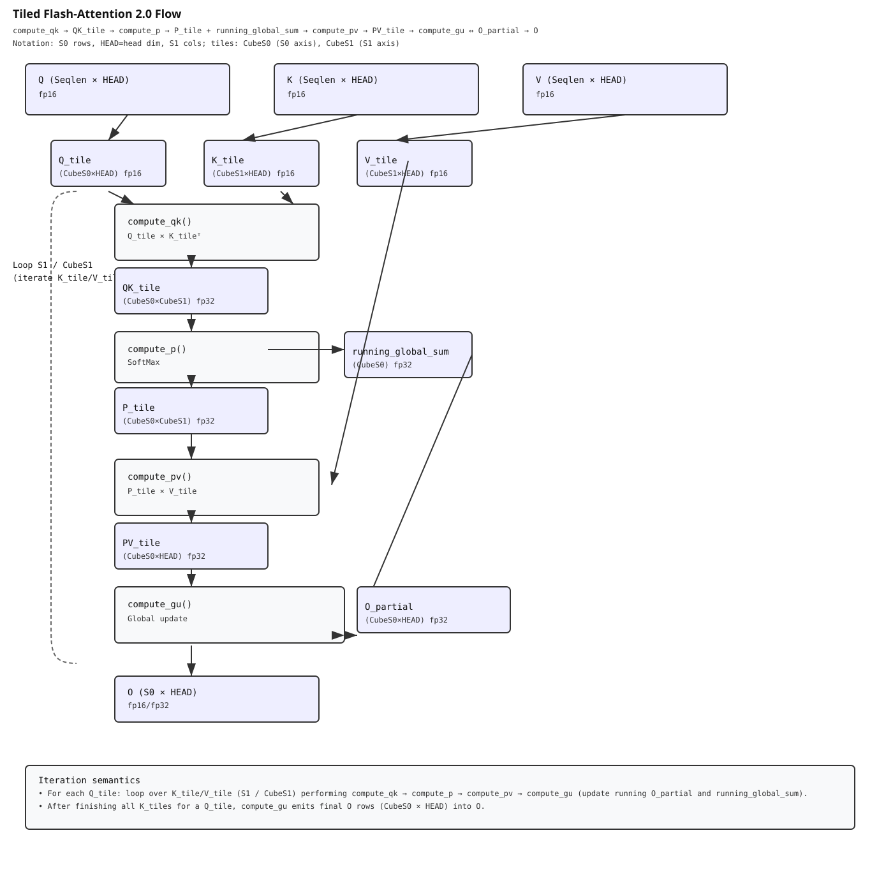
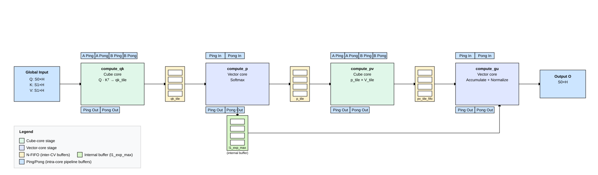
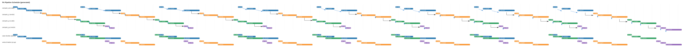
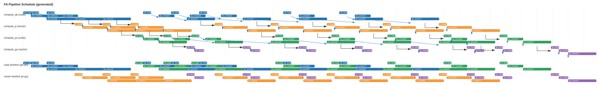
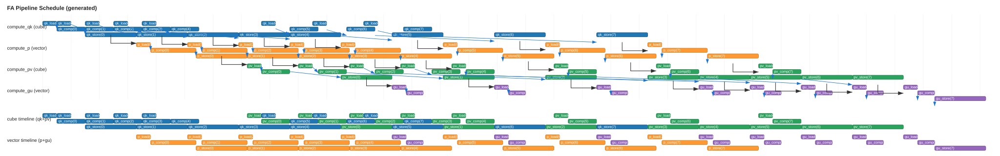
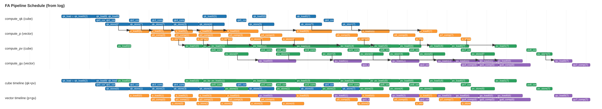

概览¶
本示例演示如何使用 PTO 实现混合精度的 Flash Attention（FA）算子，包含工程结构、构建与运行方式。
支持的 AI 处理器¶
- Ascend A2 (Ascend 910B)
- Ascend A3 (Ascend 910C)
目录结构¶
kernels/manual/common/flash_atten/
├── scripts/
│ └── gen_data.py # 生成输入与 golden 输出
├── CMakeLists.txt # 构建配置
├── fa_performance_kernel.cpp # Kernel 实现
├── main.cpp # Host 侧入口
└── run.sh # 便捷脚本
构建与运行¶
- 配置 Ascend CANN 环境（示例路径）：
source ${ASCEND_INSTALL_PATH}/bin/setenv.bash
- 运行示例：
cd ${git_clone_path}/kernels/manual/common/flash_atten
# 运行默认 case（与 generated_cases.* 中内置集合一致）
bash run.sh -r npu -v Ascend910B1
# 从内置集合中只运行一个 case
bash run.sh -r npu -v Ascend910B1 -c case_float_H_128_S0_128_S1_1024
# 提供自定义 case（用分号分隔：HEAD_SIZE,S0,S1,CUBE_S0,TILE_S1）
# TILE_S1：支持 128（=CUBE_S1）、256、512
bash run.sh -r npu -v Ascend910B1 --cases "128,128,1024,128,128;128,2048,2048,128,512"
# 提供自定义 case，并只运行其中一个
bash run.sh -r npu -v Ascend910B1 --cases "128,128,1024,128,128;128,512,2048,128,128" \
-c case_float_H_128_S0_128_S1_1024
成功时输出：
test success
性能¶
本节记录该目录下手工 Flash Attention kernel 的参考性能数据。
定义：
- S0：query 序列长度（Q/O 的行数）。
- S1：key/value 序列长度（K/V 的行数）。
- Total task time (us)：每个 task 的端到端 kernel 时间（微秒）。
- GOps：该 task 计数的总运算量。
- TFLOPS：GOps / time。
- Normalized TFLOPS：TFLOPS × (24 / cores_used)，用于估算在 24 核 A3 上的满芯吞吐。
小结¶
- 更大的
S1能提升利用率；归一化吞吐从S1=1024到S1=4096增幅很明显。 - 对
S1=8192，1–2 核的最佳归一化吞吐非常接近（≈172.9 vs 171.4），提示该 kernel 正接近带宽/同步上限，而非随核数线性扩展。 - 4/8 核在较小
S1时归一化吞吐更低，通常被固定开销主导（流水线 warm-up、同步、以及内存搬运）。 - 仿真（simulation）数值可能显著高于板上实测，因为模拟器不会建模所有硬件争用/时延特性；性能决策请以板上数据为准。
表格（A2/A3）¶
归一化 TFLOPS（越高越好）：
| Cores | S0 | S1=1024 | S1=2048 | S1=4096 | S1=8192 |
|---|---|---|---|---|---|
| 1 | 128 | 38.27 | 62.62 | 147.08 | 172.86 |
| 2 | 256 | 48.51 | 73.04 | 148.03 | 171.43 |
| 4 | 512 | 38.60 | 58.10 | 138.19 | 149.27 |
| 8 | 1024 | 25.28 | 37.51 | 99.94 | 120.04 |
Total task time（us，越低越好）：
| Cores | S0 | S1=1024 | S1=2048 | S1=4096 | S1=8192 |
|---|---|---|---|---|---|
| 1 | 128 | 42.08 | 51.44 | 43.80 | 74.54 |
| 2 | 256 | 33.201 | 44.101 | 43.521 | 75.162 |
| 4 | 512 | 41.721 | 55.441 | 46.621 | 86.322 |
| 8 | 1024 | 63.72 | 85.882 | 64.461 | 107.342 |
GOps：
| Cores | S0 | S1=1024 | S1=2048 | S1=4096 | S1=8192 |
|---|---|---|---|---|---|
| 1 | 128 | 67.11 | 134.22 | 268.44 | 536.87 |
| 2 | 256 | 134.22 | 268.44 | 536.87 | 1073.74 |
| 4 | 512 | 268.44 | 536.87 | 1073.74 | 2147.48 |
| 8 | 1024 | 536.87 | 1073.74 | 2147.48 | 4294.97 |
实测 TFLOPS：
| Cores | S0 | S1=1024 | S1=2048 | S1=4096 | S1=8192 |
|---|---|---|---|---|---|
| 1 | 128 | 1.59 | 2.61 | 6.13 | 7.20 |
| 2 | 256 | 4.04 | 6.09 | 12.34 | 14.29 |
| 4 | 512 | 6.43 | 9.68 | 23.03 | 24.88 |
| 8 | 1024 | 8.43 | 12.50 | 33.31 | 40.01 |
仿真与板上对比（Seq = 2K）：
| Run | Total task time (us) | Normalized TFLOPS |
|---|---|---|
| 板上（NPU） | 147.92 | 21.78 |
| 仿真（Simulation） | 28.59 | 112.66 |
算子说明¶
本节从“数学公式 → 分块计算 → PTO 实现/调参”的顺序，说明该 Flash Attention kernel。核心代码分为四个阶段：compute_qk、compute_p、compute_pv、compute_gu。
1. 计算流程（FlashAttention 2.0）¶
令 Q ∈ ℝ^{S0×H}、K ∈ ℝ^{H×S1}、V ∈ ℝ^{S1×H}，其中 H 为 HEAD_SIZE。单头 attention 的标准形式（省略 softmax 常数项）为：
为了降低显存占用并提升访存效率，QK 与 softmax 会按 (S0, S1) 分块（tile）流式计算，并在遍历 S1-tiles 的过程中持续更新输出 O 的“running sum”。
数值稳定的 tiled softmax（按 S1 分块）¶
对每一行 \(i\)，在处理当前 tile 时会做如下递推（与常见的数值稳定 softmax 写法等价）：
步骤 1：局部行最大值（local row max）
local_max：当前 tile 每一行的最大值。
步骤 2：更新全局最大值（updated global max）
new_global_max：把历史全局 max 与当前 tile 的 local max 合并。
步骤 3：历史项重标定系数（rescaling factor）
l1_exp_max：当 max 增大时，用该指数因子重标定历史累加项。
步骤 4：逐元素指数（per-element exponentials）
p_tile_fp32 / x_exp：逐元素指数值（p_tile_fp32 为 FP32 缓冲；x_exp 会 cast 为 fp16 供后续 matmul）。
步骤 5：本 tile 的局部和（local sum）
local_sum：当前 tile 的逐行指数和。
步骤 6：更新全局和（updated global sum）
l2_global_sum：数值稳定的递推累加式。
处理完所有 tiles 后，得到最终 softmax 概率：
备注：
- 缩放系数 \(s = \frac{1}{\sqrt{\mathbb{HEAD\_SIZE}}}\)
- 当全局 max 增大时，通过重标定历史累加项保证数值稳定
- Kernel 会保存 x_exp 供 compute_pv 使用，同时保留 l1_exp_max 与 l2_global_sum 供 compute_gu 做 running 累加与最终归一化

2. 张量形状（按阶段）¶
- 输入：
- Q：
S0 × HEAD_SIZE（fp16） - K：
S1 × HEAD_SIZE（fp16） - V：
S1 × HEAD_SIZE（fp16） - 每个 S1 tile 的中间量（tile t）：
qk_tile：S0 × Cube_S1（fp32 累加），例如64×128/128×128p_tile（x_exp）：S0 × Cube_S1（fp16，用于 matmul）pv_tile：S0 × HEAD_SIZE（fp32），每个 tile 的部分结果- 输出：
- O：
S0 × HEAD_SIZE（fp16/fp32）
3. 分阶段实现与调参¶
compute_qk（Cube matmul）¶
- 作用：计算单个 S1 tile 的 Q·K_t（cube pipeline）。
- 实现要点：
- Q tile 做 leftTile 驻留：当
tile_idx==0时加载一次 Q；后续 tiles 只加载 K，减少从 GM 的重复读取 - qk 部分结果写入紧凑的 ping/pong 全局缓冲
- 复用
matmul_macro_pto（matTile → accTile），并维护 left/right tiles 的 ping/pong 状态 - 调参点：
assign_running_acc_tile让输出 accTile 在compute_qk与compute_pv之间双缓冲qkPreloadNum（默认 4）同时决定qkp_tile_fifo_size = 1 + qkPreloadNum，用于 cube 生产者与 vector softmax 消费者之间的 FIFO 深度
compute_p（Vector softmax：TSOFTMAXFA）¶
- 作用：在 S1 维度按 tile 增量计算并保持数值稳定的 tiled softmax。
- 实现要点：
- Vector tiling：
Vec_S0 = S0 / VEC_CORES，每个 vector subblock 处理Vec_S0 × Cube_S1；VEC_CORES控制 S0 行在 vector subblock 间的切分 - 每个 vector core 用
get_subblockid()计算全局张量 load/store 的 tile 索引与 qk/p/pv/o buffer 偏移，自然形成 SPMD 并行 TSOFTMAXFA微内核负责 softmax 递推：保存每个 tile 的l1_exp_max与l2_global_sum，供compute_gu做 running 累加并在最后一步计算最终 O- 实现取舍：
- 优先使用固定 tile 尺寸的
TROWMAX/TROWSUM（128/256/512/1024 reduce 轴上的实现通常更高效） - 对动态有效行/列可先做
TFILLPAD（PAD_MIN/-INF）把动态 mask 转成静态（例如处理动态 S0） TROWEXPANDSUB支持原地计算（dst==src），可减少临时 buffer- UB 分配（
allocate_vec_tile_buffers）： - 目的：为
compute_p/compute_gu的 per-vector tiles 预先规划 UB 偏移，让 vector cores 复用一小组固定 UB 地址 - 常用参数：
SrcBuffers、XexpBuffers、pvVecBuffers、ExpMaxBuffers（ExpMaxBuffers通常等于qkp_tile_fifo_size） - 典型分配顺序：
qkvec tiles →m1_local_max→m2_global_max→input_reduce_tmp→l1_local_sum→l2_global_sum→l1_exp_max[]→x_exp[]→runningOTile
compute_pv（P·V matmul）¶
- 作用：把每个 tile 的 P（softmax 输出）与对应的 V tile 相乘，得到 PV 的部分累加（cube matmul 风格）。
- 实现要点：
- 加载 V tile 与 P tile，并把
pv_tile_fifo写入全局 float buffer 的 per-tile ping/pong 缓冲 - 调参点：
pv_tile_fifo_size（通常为1 + qkPreloadNum）控制 P 生产与 GU 消费之间的 FIFO 深度
compute_gu（归约 / 归一化）¶
- 作用：消费
pv_tile_fifo并累加到runningOTile；最后一个 tile 触发对l2_global_sum的最终除法得到输出 O。 - 实现要点：
- vector core 驱动，使用
TGU_ND/TGU_LAST_ND宏做 per-tile 累加 - 实现取舍：
- 保持
runningOTile绑定（assigned），避免重复分配 TROWEXPANDMUL/TROWEXPANDDIV支持原地计算（dst==src），可减少临时 buffer
4. 流水线编排（Cube/Vector 并行）¶
跨阶段通过 CV FIFO + 阶段内 ping/pong 做软件流水化：

S1 tiles 循环中的典型流程：
- cube：
compute_qk预加载下一批 QK tile，并通过 flag 通知 vector - vector：
compute_p等待 qk 就绪，在该 chunk 上运行TSOFTMAXFA产出 p tile，并通知 pv 消费者 - cube：
compute_pv消费 p 与 v，生成pv_tile_fifo，写回全局并通知 GU 消费者 - vector：
compute_gu消费pv_tile_fifo并累加到runningOTile
阶段内的关键机制：
- matmul_macro_pto + assign_running_acc_tile：leftTile/rightTile/AccTile 的双缓冲，使 cube core 能在 preload 序列里交错 compute_qk 与 compute_pv
- compute_p 的 qk 输入与 p 输出也做双缓冲；expT 提供多 preload buffer，支持更晚的结果转发
通过阶段重排打破依赖（示例）：
- 以 Head=128、S0=128、S1=1024 为例，CUBE_S1=128 时共有 4 个 loop，每个 loop 执行
compute_qk -> compute_p -> compute_pv -> compute_gu。在不做预执行（preload）的情况下，这四段会趋向串行：

增大 qkPreloadNum 后，可以让 cube pipeline “跑在前面”，更好地把 vector 侧资源摊平（下图为示意）：


仿真中（H128，Seqlen=1024）的行为与上述趋势一致：

从该 case 的流水线图可以看到瓶颈更偏向 cube 侧的 TSTORE（Cube 利用率约 30%），后续优化会优先围绕这一点展开。
调参入口（knobs）：
- qkPreloadNum：允许 cube pipeline 预先产出更多 QK tiles
- qkp_tile_fifo_size：qk/p FIFO 深度（通常为 1 + qkPreloadNum）
- pv_tile_fifo_size：PV FIFO 深度（通常与 qk FIFO 深度匹配），用于与 GU 重叠
- 同步：优先用轻量 device flags；在 UB 允许时，尽量用更深的 FIFO/更大的 preload 拉开重叠
5. 多核切分与负载均衡¶
- 多核 tiling：
- QKV 输入是 BNSD（Batch、Head 数、Seqlen、HEAD_SIZE）布局，计算过程中会产生中间的 QK(S0,S1)。由于 S1 是归约轴，多核切分通常按 (B, N, S/Cube-S0) 分；在 Flash-decoding 场景中 (B, N, S/Cube-S0) 较小，未来可以考虑沿 S1 轴切分（TODO），每核保留部分 O，并通过另一个 kernel 做最终 GU
- 对很大的 S0（超过 A2/A3 的最大物理核数 25）时，中间 FIFO buffer 可能引入浪费与不必要的 L2 回写，可按 core id 做进一步优化（TODO）
- 负载均衡：
- 引入 causal attention mask 时需要考虑稀疏性（TODO），多核 tiling 也要关注沿 S0 轴的负载不均。当前做法是在大 S0 时采用 block 数 > 物理核数的多 block 启动方式；后续可以探索更多策略